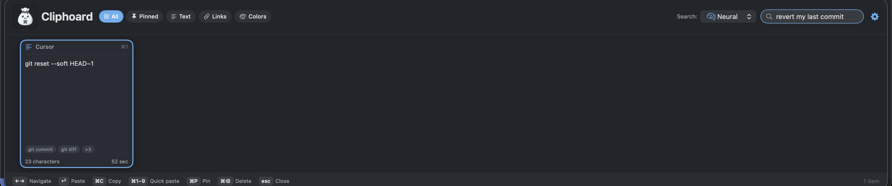
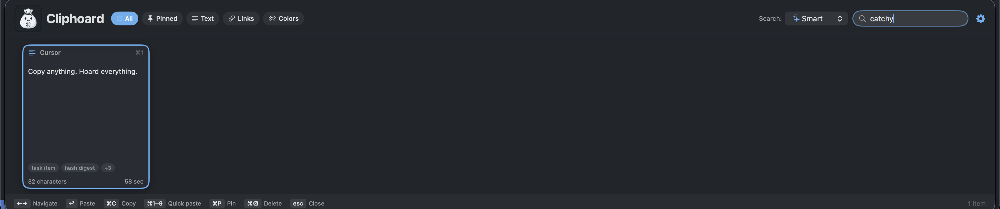
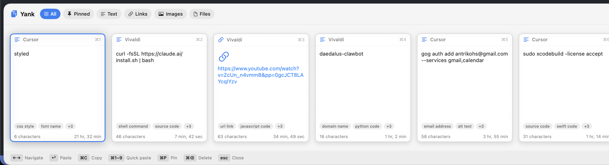
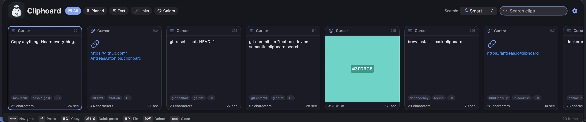

Copy anything.
Hoard everything.
A fully featured, free clipboard manager for macOS. Search your history by meaning with ⌃⌥⌘V. Your clips stay on your Mac.
I'm Antreas. I'm building Cliphoard and working toward US$250,000 in net sales proceeds to support Axiotic, my next chapter in independent AI research — what that means, and where the total stands.
The entire application codebase is open source under the MIT licence, including the Pro features.
1.0.1 is available now. Signed by A SQUARED LABS LIMITED,
notarized by Apple, and verified through a customer installation.
Download the DMG, drag Cliphoard to Applications, and open it there.
Release notes and checksum.
macOS 13 Ventura or later. Universal, for Apple Silicon and Intel. All releases.

US$250,000 in net sales proceeds, to fund the research
Cliphoard is how I intend to pay for independent AI research. The goal is US$250,000 in net sales proceeds across the Apple App Store and Lemon Squeezy, reported here as each reconciliation lands. All figures on this page are in US dollars.
No reconciled reports available.
The goal is US$250,000.
A combined total appears here once reconciled reports covering the same period exist for both channels.
- Apple App Store
- Awaiting reconciled reports
- Lemon Squeezy
- Awaiting reconciled reports
Published from reconciled provider reports. All figures in US dollars.
How the total is counted
It measures provider-reported net sales proceeds in US dollars — after customer taxes, platform and payment fees, refunds, chargebacks and reported adjustments, and before income tax and running costs. It is not a current bank balance. Reconciliation is monthly, so the figure moves in steps when a report lands rather than as a live stream, and refunds can take it down.
US$250,000 is a milestone rather than a cap; anything beyond it supports further research. Buying Cliphoard buys the software.
Why I'm asking
I built Cliphoard because finding something you already copied should be easy. The question behind my work is separate, and it came first: how much useful intelligence can we put on a computer people already own?
I'm Antreas, an AI researcher and engineer. My PhD, at the University of Edinburgh, was in machine learning and meta-learning — how systems learn to learn.
For Cliphoard specifically, I trained and distilled two small open-ogma text models from open teachers; they are what the meaning-based text search runs on. Finding a picture from a description uses OpenVision, reading the text inside a screenshot uses Apple's Vision framework, and the larger text tier is a sentence-transformers model. Those three are other people's work, credited as such.
The research I have published was done with collaborators. This next stage I am carrying forward on my own.
That stage is Axiotic: high-risk, high-reward foundational AI research, chosen because a question is worth testing rather than because it is what funding currently favours. Daedalus comes first — how a system learns from experience, builds a usable model of its world, remembers, reasons, and gets more out of limited computation. Praxis is the physical extension of the same question, where a body and its controller are designed together and tested in simulation first. Both are research programmes and open hypotheses, not finished products, and neither is a capability that is in the clipboard app today.
US$250,000 buys what that work actually needs: research time, compute, careful evaluation, and the engineering it takes to release a model rather than only train one. The aim is for some of it to come back here as better models inside Cliphoard, running on your Mac with no clipboard uploads — though which improvements arrive, and when, depends on what the research turns up.
I can't promise which experiments will work. I can run them, report what happens, and bring the useful parts back into tools you can hold. Buying a useful app helps make that time possible. That is the whole arrangement.
Antreas AntoniouEdinburgh
What it does
A native bar for everything you copy, and a search that works on what you meant rather than only on what you typed.
- Summon it over any app
- A global ⌃⌥⌘V brings the bar up on top of whatever you are using. Pick a clip and it goes back to the app you came from. You can also copy without pasting, or paste as plain text with the formatting stripped.
- Search by meaning
- A small model embeds the text you copy, on your Mac, so “revert my last commit” finds
git reset --soft HEAD~1without sharing a word with it. Four modes: the literal words, by auto-assigned category, pure meaning, or all three combined. - Everything you copy, recognised
- Plain and rich text, links, hex colours, files and images. Images keep a thumbnail for browsing, and a link is spotted even when you copied a bare domain.
- Tag baskets that stack
- Pick the vocabularies that match your work — developer, writing, business, everyday — and tick as many as you like. Each adds its own axes and none overwrite the others.
- Time you can type
- Today, yesterday, this week, a custom range, or type
when:yesterdayorwhen:2026-07-01..2026-07-15straight into the search field. - 17 themes, three layouts
- A horizontal card strip, a dense list, or a Spotlight-style palette with a live preview. Themes run from a clean Swiss greyscale to One Dark, Dracula, Tokyo Night and Catppuccin, in both light and dark, and it follows your system appearance if you let it.
- Your history, your limit
- The limit starts at 200 clips. You can set it to anything, and switching it off entirely is one of the options rather than the default. Pinned clips are never trimmed.
- Bring your old history
- Ten clipboard managers are catalogued. Three are verified against real installs — Paste, Maccy and Flycut — and Alfred is read from its published schema; the remaining six do not have an adapter yet. Import shows you exactly what it found before it writes anything, tags each batch so you can undo the whole import, and never deletes a clip you already have.
- Move to another Mac
- Export your whole history as one encrypted file and import it on the new machine. Free, in both directions — charging for the way out of your own data would invert the entire pitch.
Search, actually working
Two real queries against a real history. Neither result shares a word with the query that found it.

git reset --soft HEAD~1.
View full size






The models that do the searching
Cliphoard itself is MIT licensed. The models it ships are permissively licensed too, and each one keeps its own terms and its own credit — listed below.
Model tiers, parameter counts, licences and credits
| Tier | Model | Parameters | Top-1 | Licence | Credit |
|---|---|---|---|---|---|
| Low | open-ogma-micro | 2.5M | 13/21 | MIT | open-ogma / Antreas Antoniou |
| Normal, the default | open-ogma-small | 8.9M | 15/21 | MIT | open-ogma / Antreas Antoniou |
| High | all-MiniLM-L6-v2 | 22.7M | 19/21 | Apache-2.0 | sentence-transformers |
| Pictures | OpenVision-Tiny | 17.1M | — | Apache-2.0 | OpenVision |
Reading the text inside a screenshot uses Apple's Vision framework, which is part of macOS rather than a bundled model.
Your clipboard holds passwords, so it is treated that way
Nothing you copy is uploaded, to me or to anyone. There is no Cliphoard account, no telemetry, no cloud and no sync. Your history is encrypted on your own Mac with a key that cannot leave it. The privacy policy sets all of it out in detail, and the source is open for anyone who would rather check than be told.
- Encrypted at rest
- Every clip — text, rich text, file paths, colours, recognised text, your tags, the app you copied from, images and the semantic search index — is sealed with authenticated AES-GCM before it touches disk. Only timestamps, clip kind, pin state and small detector flags are stored in the clear.
- The key is bound to the Secure Enclave
- The AES key is derived from a P-256 key generated inside your Mac's Secure Enclave, and that private key cannot be extracted. A copy of the derived key sits in your login Keychain marked this-device-only; it is never in the database, so a copy of the database on another Mac is undecryptable. Macs without a Secure Enclave use a random key in the login Keychain instead. There is no Touch ID prompt anywhere in Cliphoard.
- Moving to a new Mac, in 1.0.1
- Export your history as one encrypted file and import it on the new machine, where every clip is re-sealed under that Mac's own key. One authenticated stream of AES-256-GCM, key from your passphrase (PBKDF2-HMAC-SHA256, at least 600,000 iterations). A truncated, reordered or modified file is refused rather than partly read. The passphrase is the only key — there is no recovery: nothing is escrowed, no backup key exists, and the file is as sensitive as the history inside it. Import merges and never deletes; a clip already on the new Mac is kept as it is.
- Secrets are skipped at capture
- Pasteboards marked transient or concealed — what a password manager sets when you
copy a password — are not stored. A clip that still arrives from a known password
manager is stored encrypted but quarantined: flagged, and kept out of every
search index. It is not hidden and not locked; it stays visible and pastable in your own
history. You can exclude any app with a one-line
defaults write. - Nothing is analysed that shouldn't be
- The same detectors that quarantine a password-manager clip also veto it from every index — no embedding, no tags, no recognition. A screenshot the detector withholds is not analysed at all; its pixels are never even decoded.
- Owner-only on disk
- The store lives in your Application Support folder with
0700and0600permissions, so other user accounts on the same Mac cannot read it. - What the app does use the network for
- The direct edition downloads search models you choose when they are not installed. The App Store edition bundles its models and uses Apple for Pro purchases and restoration. Neither sends your clipboard content. Every search, every screenshot read and every image embedding runs on your Mac. The privacy policy explains provider connection metadata.
- The one thing it writes to your clipboard
- macOS puts a screenshot on the clipboard in a format browsers cannot read, so pasting one into a web app silently does nothing. Cliphoard adds a PNG they understand, and because macOS only lets the clipboard's owner add a format, it has to take ownership and write the whole clipboard back. That is the only time Cliphoard touches your clipboard beyond reading it and writing the clip you picked. It is on by default, and there is a switch in Settings to turn it off.
Free and Pro
Free is a complete, fully featured clipboard manager. I set out to build something better than the best clipboard managers out there, and to make that everyday experience free.
That means every text search mode, the unlimited-history option, pinning, images, themes, every importer and encrypted export and import between Macs. Pro adds specialist image features and offers a way to support the research.
| Free | Pro | |
|---|---|---|
| History, pinning and the unlimited-history option | Yes | Yes |
| Searching text by meaningthe literal words, by category, pure meaning, or all three | Yes | Yes |
| Images and thumbnails, encrypted at rest | Yes | Yes |
| 17 themes and three layouts | Yes | Yes |
| Importing from other clipboard managers | Yes | Yes |
| Encrypted export and import between Macs | Yes | Yes |
| Finding a picture by describing itsearches the pixels, not any text in them | No | Yes |
| Reading the text inside your screenshots | No | Yes |
| Clips that look like this one | No | Yes |
The whole codebase is open source
All of Cliphoard's application code, including the Pro features, is open source under the MIT licence. You can read it, build it, modify it and share it. Third-party models keep their own licences and credits.
Pro purchasing is being prepared. The intended upgrade is a one-time purchase. A verified purchase link will appear here when ready.